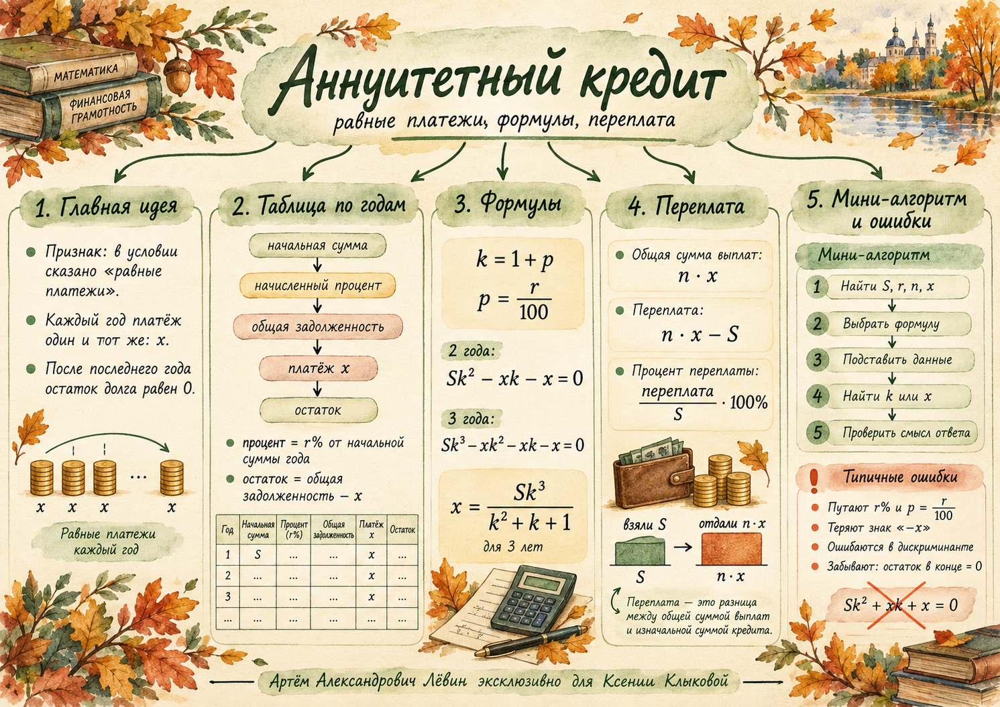

01 / Сигнал Что означает «равными платежами»
Если в условии кредит погашается равными платежами в конце каждого года, после начисления процентов, используется аннуитетная схема. Ежегодная сумма платежа обозначается одной буквой x. Проценты каждый раз начисляются на текущий остаток долга.
Платёж каждый год одинаков. Процентная часть платежа при этом может меняться вместе с остатком задолженности.
02 / Механика Из чего состоит один год кредита
Повышающий коэффициент k = 1 + r / 100. Если остаток после предыдущего года равен Bi−1, то после начисления процентов и очередного платежа получается:
При 200 тыс. руб. под 20 % первый год даёт проценты 40 тыс. руб., общую задолженность 240 тыс. руб. и остаток 240 − x.
| Год | Долг в начале | Проценты | Долг перед платёжом | Платёж | Остаток |
|---|---|---|---|---|---|
| 1 | 200 | 40 | 240 | x | 240 − x |
| 2 | 240 − x | 0,2(240 − x) | 1,2(240 − x) | x | B₂ |
| 3 | B₂ | 0,2B₂ | 1,2B₂ | x | 0 |
03 / Вывод Формулы для двух и трёх лет
Из B₀ = S последовательно получаем B₁ = Sk − x, затем B₂ = (Sk − x)k − x. Для полного погашения приравниваем последний остаток к нулю.
Два года
Три года
Для n лет формула имеет вид Skn − x(kn−1 + … + k + 1) = 0. Степени k у платежей уменьшаются на единицу.
04 / Пример Находим равный платёж
Условие: кредит 455 тыс. руб. под 20 % годовых на три года. Определите ежегодный платёж.
- Переводим ставку: k = 1 + 0,20 = 1,2.
- Подставляем в формулу: x = 455 · 1,2³ / (1,2² + 1,2 + 1).
- Получаем 216 тыс. руб. ежегодно.
- Проверяем остатки по годам: 455 · 1,2 − 216 = 330; затем 330 · 1,2 − 216 = 180; наконец 180 · 1,2 − 216 = 0.
05 / Обратная задача Находим ставку из платежей
Кредит 2150 тыс. руб. погашен за два года двумя равными платежами по 1322,5 тыс. руб. Ставка неизвестна. Из формулы для двух лет получаем:
Умножаем на 2 и делим на 5: 860k² − 529k − 529 = 0. Дискриминант равен 2 099 601 = 1449².
Корни: k = (529 ± 1449) / 1720. Отрицательный корень не подходит. Положительный k = 1,15 даёт r = 15 %.
Для положительной ставки k > 1. При поиске корня обязательно проверьте знак, арифметику дискриминанта и остаток после второго года: 2150 · 1,15 − 1322,5 = 1150, затем 1150 · 1,15 − 1322,5 = 0.
06 / Термины Сумма выплат и переплата
n · x — всё, что возвращено банку.
n · x − S — насколько больше первоначальной суммы внесено.
[(nx − S) / S] · 100 %.
Получено 480 тыс. руб., три платежа по 190 тыс. руб.: всего 570; переплата 90; процент переплаты 18,75 %.
Процент переплаты за весь срок и годовая процентная ставка — разные показатели.
07 / Проверка Частые ошибки
- Перепутали 20 % с 0,4: при 20 % правильно k = 1,2.
- Начислили проценты на первоначальную сумму во втором году вместо текущего остатка.
- Забыли знак вычитания перед очередным платежом x.
- Подставили разные платежи при условии равных.
- Не использовали условие полного погашения Bₙ = 0.
- Не проверили найденный корень квадратного уравнения.
08 / Путь А Десять заданий для самостоятельной работы
Во всех задачах платёж в конце года после начисления процентов. Суммы в тысячах рублей, если не указано иное. Ответы раскрываются после выполнения.
- Ставка кредита 12 %. Найдите повышающий коэффициент.
- Кредит 200 тыс. руб. под 20 % годовых: найдите проценты первого года, долг перед первым платежом и остаток после платежа x.
- Кредит 300 тыс. руб. под 10 % на два года: запишите B₁, B₂ и уравнение полного погашения.
- Для двухлетнего кредита с суммой S и коэффициентом k выведите формулу равного ежегодного платежа.
- Кредит 210 тыс. руб. под 10 % на два года с равными платежами. Найдите платёж.
- Кредит 244 тыс. руб. под 25 % на три года с равными платежами. Найдите платёж.
- Кредит 600 тыс. руб. погашен тремя платежами по 250 тыс. руб. Найдите сумму выплат и переплату.
- Кредит 100 тыс. руб. под 50 % на два года с равными платежами. Найдите процент переплаты.
- Двухлетний кредит под 25 % погашен двумя платежами по 200 тыс. руб. Найдите первоначальную сумму.
- Кредит 550 тыс. руб. погашен за два года двумя платежами по 360 тыс. руб. Найдите годовую ставку без калькулятора.
Открыть ответы для самопроверки
09 / Материалы Пособие и ментальная карта


10 / Итог Что проверить в своём решении
Последний контроль: рассчитанные выплаты должны погасить долг полностью, а все денежные величины должны быть в согласованных единицах.